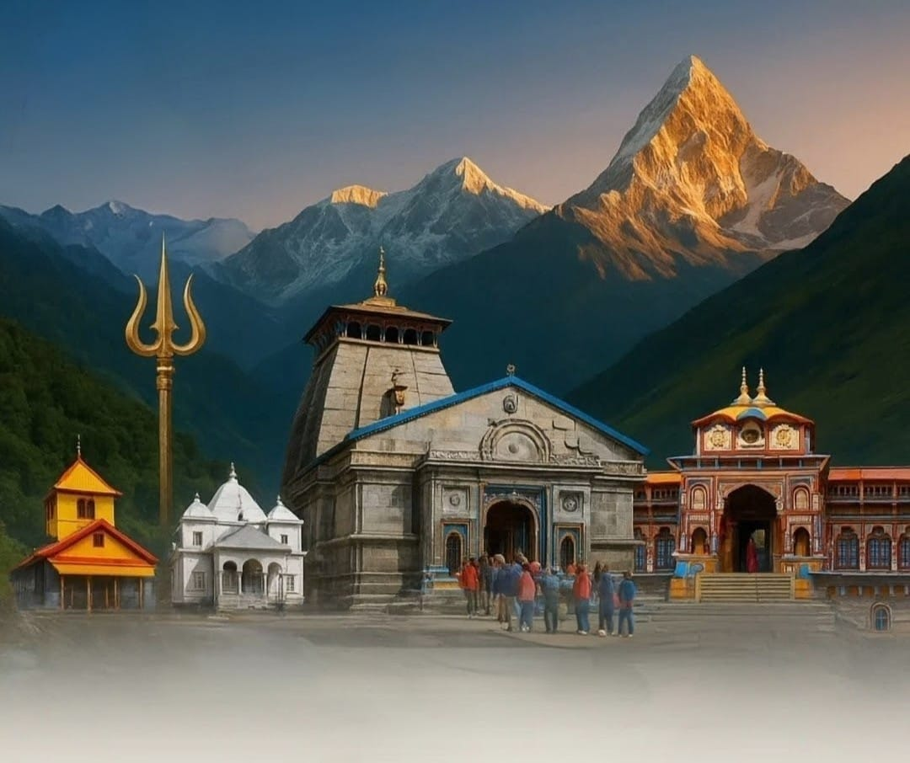
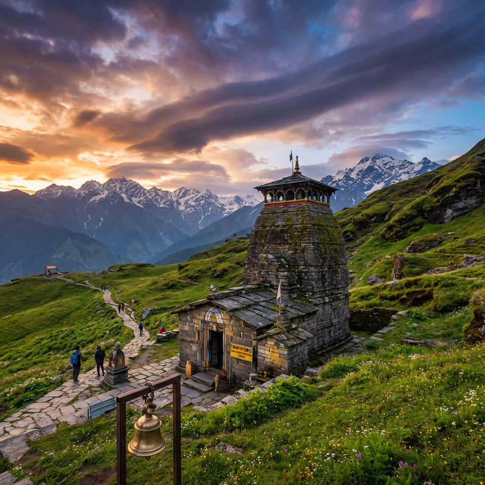
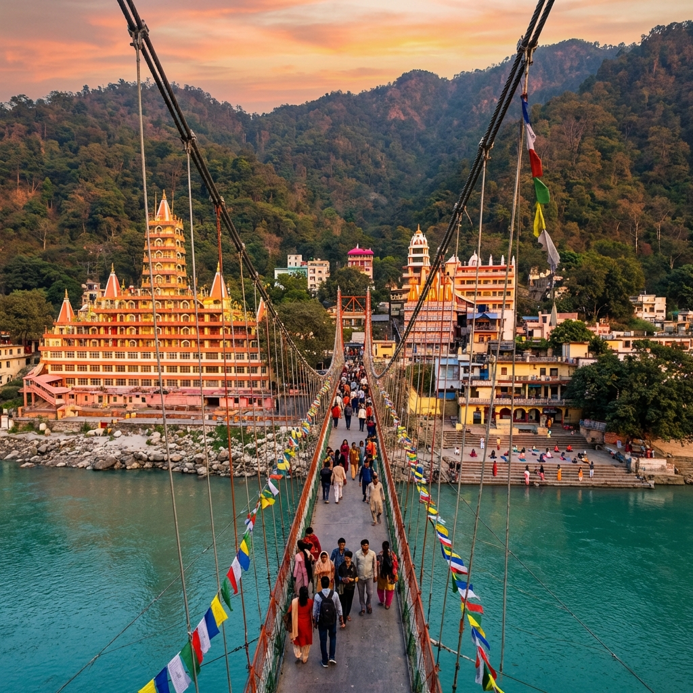

Choose Your Sacred Journey
Explore our comprehensive Yatra offerings tailored for every spiritual seeker

4 Days
3,583m Altitude
Trek/Heli Option
Explore Kedarnath

4 Days
Road Access
Mana Village
Explore Badrinath

5-6 Days
2 Sacred Shrines
Popular Choice
Explore Do Dham

10-12 Days
4 Sacred Dhams
Most Popular
Explore Char Dham

5-6 Days
Heli Services
Premium
Explore Helicopter Yatra

12-14 Days
5 Temples
Trekking Required
Explore Panch Kedar

5-7 Days
5 Confluences
Scenic Drive
Explore Panch Prayag
6-8 Days
5 Temples
Vishnu Worship
Explore Panch Badri